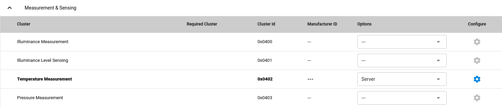

As part of this guide, you will modify the Matter template sample by adding new application clusters in order to create a Matter sensor device that measures temperature and can be turned on and off.
The sensor will periodically generate the simulated temperature sensor value and update the corresponding cluster attributes.
This application will form a Matter device within a Matter network.
Note
Make sure you are familiar with Matter in the nRF Connect SDK and you have tested some of the available Matter samples before you work with this user guide.
The Matter device is a basic node of the Matter network.
The device is formed by the development kit and the application that is running the Matter stack, which is programmed on the development kit.
Each Matter application consists of the following layers:
Matter stack that provides the Matter core components.
Data Model layer in the form of clusters, which contains commands and attributes that are to be accessible over the Matter network.
This layer can be further broken down into the following groups:
Utility clusters - These clusters represent management and diagnostic features of a Matter node.
They are common for all Matter nodes.
Application clusters - These clusters represent functionalities specific to a given application.
Application logic, such as turning on and off a light bulb in response to certain commands.
Creating a Matter device consists of adding new application clusters to the Matter template sample.
By default, the template sample includes only mandatory Matter clusters, necessary to commission the device into a Matter network.
Cluster is a Data Model building block in Matter.
It is a representation of a single functionality within a Matter device, such as turning a device on and off.
Each cluster contains attributes, commands, and events, which can be mandatory or optional.
Attributes are stored in the device’s memory, while commands can be used to modify or read the state of the device, including the cluster attributes.
Clusters appropriate for a single device type such as a sensor or a light bulb are organized into an addressable container that is called an endpoint.
Most utility clusters are required to be on the endpoint with ID 0.
Application clusters are usually assigned to endpoints with IDs 1 and higher.
An application can implement appropriate callback functions to be informed about specific cluster state changes.
These functions can be used to alter the device’s behavior when the state of a cluster is changing as a result of some external event.
For more information about the Data Model layer, see Data Model section on the Matter architecture documentation page.
Adding the functionalities for an on/off switch and a sensor requires adding new clusters.
Adding new application clusters can be achieved by modifying ZAP file, which can be found as src/template.zap.
This is a JSON file that contains the data model configuration of clusters, commands, and attributes that are enabled for a given application.
It is not used directly by Matter applications, but it is used to generate the source files for handling given clusters.
The ZAP file can be edited using ZCL Advanced Platform (ZAP tool), a third-party tool that is a generic templating engine for applications and libraries based on Zigbee Cluster Library.
This tool is provided with the Matter repository in the nRF Connect SDK.
To edit clusters using the ZAP tool, complete the following steps:
Download the ZAP package containing pre-compiled executables and libraries and extract it:
Note
You can download the package in a compatible version manually from the ZCL Advanced Platform releases, but we recommend using a dedicated helper script that will do it for you.
Open your installation directory for the nRF Connect SDK in a command line.
Navigate to modules/lib/matter.
Run the helper script to download and extract the ZAP package in the directory that corresponds to the location_path argument:
Note
The -o argument in the command is used to allow overwriting files, if they already exist in the given location.
Otherwise the script will display prompt during download and ask for user consent to overwrite the files directly.
This means that your ZAP version is correct and the tool executable can be accessed from the operating system environment, so you can skip the following step about adding the ZAP tool to the system PATH environment variable.
Case 2: If your currently installed ZAP version does not match the recommended one or no ZAP version is installed on your device, you will see a message similar to the following one:
Alternatively, this message can look like the following one:
NoZAPtoolversionwasfoundinstalledonthisdevice.
In this case, the package download process will start automatically:
Trying to download ZAP tool package matching your system and recommended version.
100% [......................................................................] 150136551 / 150136551
ZAP tool package was downloaded and extracted in the given location.
#######################################################################################
# Please add the following location to the system PATH: package_extraction_location #
#######################################################################################
Note
The package_extraction_location in the example output will be replaced by the location_path from the previous step, where you extracted the package.
Add the package_extraction_location ZAP package location printed in the script output to the system PATH environment variables.
This is not needed if your currently installed ZAP version matches the recommended one (case 1 from the previous step).
For example, if you are using bash, run the following commands:
Open the src/template.zap for editing by running the following command, where samples/matter/sensor stands for the path where you copied the template sample in the first step of this guide.
By default, the window displays all available clusters.
These can be filtered to show Only Enabled clusters.
At this stage, only one endpoint is available (Endpoint 0).
In the ZAP tool, click ADD NEW ENDPOINT.
In the Create New Endpoint menu, create a new endpoint that represents the temperature sensor device type:
Configure the Temperature Measurement cluster required for this endpoint:
Expand the Measurement & Sensing menu and configure the Temperature Measurement cluster by setting the Server option from the drop-down menu.

Configuring the Temperature Measurement server cluster
Go to the Temperature Measurement cluster configuration and make sure that you have the MeasuredValue attribute enabled.
Save the file and exit.
Use the modified ZAP file to generate the C++ code that contains the selected clusters by running the following command, where samples/matter/sensor stands for the path where you copied the template sample in the first step of this guide:
After adding clusters, you must modify the way in which the application interacts with the newly added clusters.
This is needed to properly model the sensor’s behavior.
The src/app_task.cpp file contains the main loop of the application.
Complete the steps in the following subsections to modify the main loop.
The main application loop is based on an AppEventQueue, on which events are posted by ZCL callbacks and by other application components, such as Zephyr timers.
In each iteration, an event is dequeued and a corresponding event handler is called.
You need to make sure that the sensor is making measurements at the required time points.
For this purpose, use a Zephyr timer to periodically post SensorMeasure events.
In the template sample, such a timer is being used to count down 6 seconds when Button 1 is being pressed to initiate the factory reset.
To add a new timer for the measurement event, edit the src/app_task.cpp file as follows:
k_timersSensorTimer;voidSensorTimerHandler(k_timer*timer){AppEventevent;event.Type=AppEventType::SensorMeasure;event.Handler=AppTask::SensorMeasureHandler;AppTask::Instance().PostEvent(event);}voidStartSensorTimer(uint32_taTimeoutMs){k_timer_start(&sSensorTimer,K_MSEC(aTimeoutMs),K_MSEC(aTimeoutMs));}voidStopSensorTimer(){k_timer_stop(&sSensorTimer);}intAppTask::Init(){/* ... Original content */k_timer_init(&sSensorTimer,&SensorTimerHandler,nullptr);k_timer_user_data_set(&sSensorTimer,this);return0;}
The timer must be initialized in the Init() method of the AppTask class.
If StartSensorTimer() is called, the SensorMeasure event is added to the event queue every aTimeoutMs milliseconds, until StopSensorTimer() is called.
When an event is dequeued, the application calls the event handler in the DispatchEvent() function.
Because you have added new events, you must implement the corresponding handlers.
To add new event handlers, complete the following steps:
Edit the src/app_task.cpp file as follows:
voidAppTask::SensorActivateHandler(constAppEvent&){StartSensorTimer(500);}voidAppTask::SensorDeactivateHandler(constAppEvent&){StopSensorTimer();}voidAppTask::SensorMeasureHandler(constAppEvent&){chip::app::Clusters::TemperatureMeasurement::Attributes::MeasuredValue::Set(/* endpoint ID */1,/* temperature in 0.01*C */int16_t(rand()%5000));}
With this addition, when the sensor is active, the timer expiration event happens every half a second.
This causes an invocation of SensorMeasureHandler() and triggers an update of the MeasuredValue attribute of the Temperature Measurement cluster.
Note
In the code fragment, the example value is updated randomly, but in a real sensor application it would be updated with the value obtained from external measurement.
Declare these handler functions as static in the public scope of AppTask class in src/app_task.h to make sure the application builds properly.
Handlers for the SensorActivate and SensorDeactivate events are now ready, but the events are not posted to the event queue.
The sensor is supposed to be turned on and off remotely by changing the OnOff attribute of the On/off cluster, for example using the Matter controller.
This means that we need to implement a callback function to post one of these events every time the OnOff attribute changes.
To implement the callback function, complete the following steps:
Create a new file, for example src/zcl_callbacks.cpp.
Implement the callback in this file:
Open src/zap-generated/callback-stub.cpp to check the list of customizable callback functions, marked with __attribute__((weak)).
Read the description of MatterPostAttributeChangeCallback().
Implement MatterPostAttributeChangeCallback() in the src/zcl_callbacks.cpp file.
For example, the implementation can look as follows:
In this implementation, the if part filters out events other than those that belong to the On/Off cluster.
Then, the callback posts the event for the sensor, namely SensorActivate if the current value of the attribute is not zero.
To check if the sensor device is working, complete the following steps:
Connect the kit to the computer using a USB cable.
The kit is assigned a COM port (Windows) or ttyACM device (Linux), which is visible in the Device Manager.
Connect to the kit with a terminal emulator that supports VT100/ANSI escape characters (for example, PuTTY).
See How to connect with PuTTY for the required settings.
Commission the device into a Matter network by following the guides linked on the Testing Matter in the nRF Connect SDK page for the Matter controller you want to use.
The guides walk you through the following steps:
Only if you are configuring Matter over Thread: Configure the Thread Border Router.
Build and install the Matter controller.
Commission the device.
You can use the Onboarding information listed earlier on this page.
Send Matter commands.
At the end of this procedure, LED 1 of the Matter device programmed with the sample starts flashing in the Short Flash Off state.
This indicates that the device is fully provisioned, but does not yet have full IPv6 network connectivity.
Activate the sensor by running the following command on the On/off cluster with the correct node_ID assigned during commissioning:
./chip-tool onoff on node_ID 1
Read the measurement several times by checking value of MeasuredValue in the Temperature Measurement cluster: